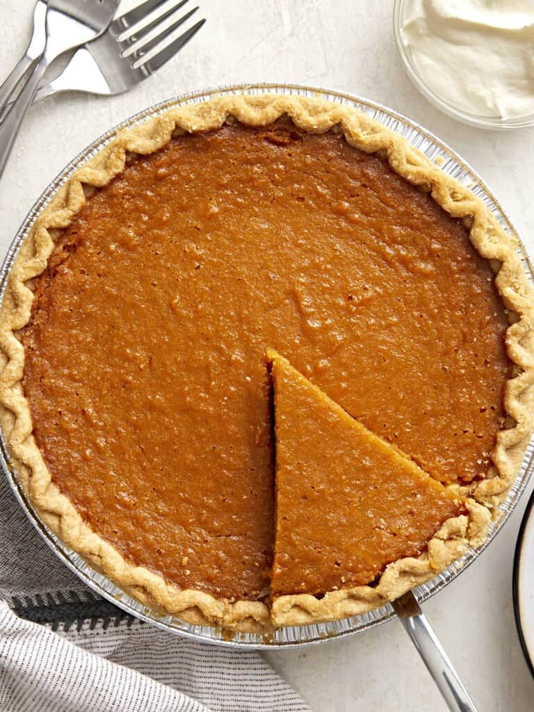

Sweet Potato Pie Recipe
Home

Ingredients
- 1 deep dish pie crust
- 2 lbs. sweet potatoes
- 6 Tbsp salted butter, melted & cooled
- 1/2 cup brown sugar
- 1/3 cup granulated sugar
- 1 tsp vanilla extract
- 1/2 tsp cinnamon
- 1/4 tsp nutmeg
- 1 pinch salt
- 1/3 cup evaporated milk
- 2 large eggs
Instructions
- Preheat the oven to 400°F. Wash and dry the sweet potatoes, then prick them several times with a fork. Place the sweet potatoes on a parchment lined baking sheet and bake for 50-60 minutes or until tender and you can easily slide a knife or fork in the center. Set the baked sweet potatoes aside to cool.
- Lower oven temperature to 350°F. Next blind-bake the pie crust. Prick the bottom and sides of the crust a few times with a fork. Add a square piece of parchment paper inside the center of the crust and place pie weights (or dry beans) on top.
- Bake the crust in the oven for 15 minutes. After 15 minutes, remove the pie weights and parchment and return the crust to the oven to bake for another 10 minutes. Remove crust from the oven and let cool.
- Now make the pie filling. Scoop about 2 cups of the sweet potato flesh from the baked sweet potatoes and add to a large bowl. Using a potato masher or hand mixer, mash or blend the sweet potato flesh until smooth.
- Add the melted butter, brown sugar, white sugar, vanilla, cinnamon, nutmeg, and a pinch of salt to the bowl. Blend the ingredients together with a hand mixer until smooth.
- Add the eggs and evaporated milk to the sweet potato mixture and blend until smooth.
- Pour the sweet potato pie filling into the crust. Add a foil ring around the edges to prevent the crust from over-browning. Bake the pie in the preheated 350°F oven for 50-55 minutes or until the pie is mostly set and the center is no longer liquid. It’s ok if the center has a slight jiggle when you shake the pan.
- Remove the pie from the oven. It will be slightly domed and puffed around the edges. Let the pie cool at room temperature for at least 1 hour. Serve at room temperature or cover and refrigerate to serve later.